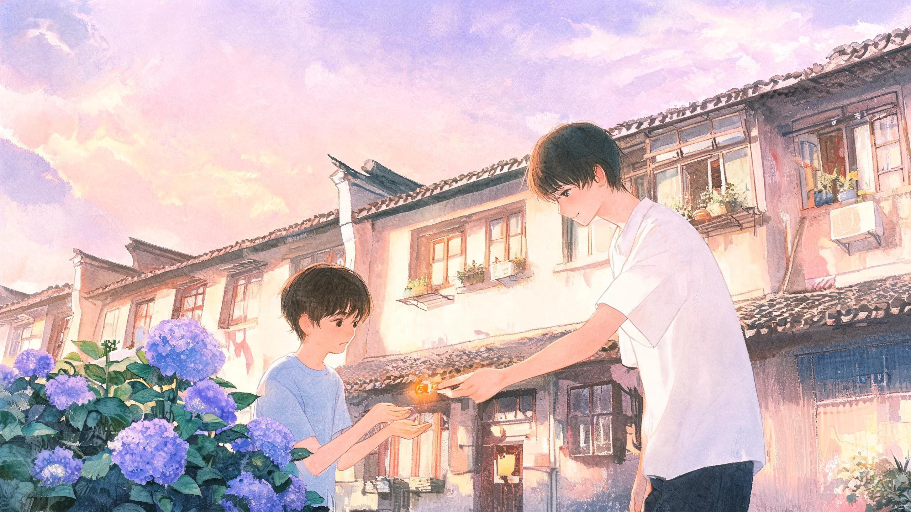

盛夏的午后，蝉鸣盖过整座城市。十岁的阮知予与十四岁的顾书珩，在楼下的绣球花丛边相遇。一颗温热的橘子糖，轻轻落进空了很久的手心里。
有人说，在夏天最热的那个午后，当蝉鸣把整座城市都盖住的时候，风里会藏着一颗糖。它叫做——
遇见。
这里的夏天很长，长得连太阳都舍不得落下去，晚霞挂在天边，从粉橘烧成浅紫，又从浅紫慢慢淡成灰蓝，像一幅画被谁忘了收起来。
这里的很多人并不知道，那栋旧楼下的花坛边，藏着一个秘密。那个秘密，就是会有一个人，在你不抱任何期待的时候，弯下腰来，把一颗温热的糖放进你空了很久的手心里。
那天下午，风恰好路过，花恰好开着，而两个孤单的小孩，恰好相遇。
盛夏的午后，老旧小区像一口被太阳晒得发烫的锅。楼与楼之间的过道窄窄的，晾衣绳上挂着几件晒了一中午的衣服，纹丝不动。柏油路被晒得发软，踩上去微微发黏，空气里浮着细细的灰尘，还有青草被晒焦之后那种干燥的、热烘烘的气味。
蝉声不是一声一声的，是一片一片的，从楼下那排老槐树的枝叶间倾泻下来，聒噪得像是要把整栋楼都掀起来。家家户户都拉上了窗帘，风扇在屋里嗡嗡地转着，大人小孩都躲在屋里午睡。整片小区安静得只剩下风声和蝉鸣，连流浪猫都钻进了车底，懒懒地摊着肚皮。
只有阮知予没有睡。
十岁的阮知予蹲在楼下的绣球花丛边，小小的身子蜷成一团，像一只被谁遗忘在角落里的、软乎乎的团子。他穿着一件洗得发白的浅蓝色短袖，裤脚沾了一点草屑，膝盖上还贴着昨天摔破的创可贴。他不爱热闹，也没有玩伴。别的小孩在楼与楼之间追着跑、丢沙包、骑小自行车，笑声响亮亮地传上来；他总是一个人安安静静地待在旁边，像一条透明的影子，融进热腾腾的空气里。
爸妈常年早出晚归，整个漫长的暑假，他大多时间都是一个人——一个人吃早饭，一个人看电视看到屏幕发烫，一个人蹲在楼下看花，再一个人赶在天黑之前乖乖回家。也不是不难过，只是难过久了，就变成了一种安安静静的习惯。
绣球花开得正好。一簇一簇挤挤挨挨的，蓝的、紫的、粉的，热热闹闹地开满了一整丛，像有人把整个夏天的颜色都揉碎了撒在这里。就在这个时候，他听见了脚步声。
十四岁的顾书珩搬来隔壁不久。他租的是外婆家的老房子，就在这栋楼的六楼，隔壁单元，窗户正对着楼下的花坛。他为了升学提前补课，每天早出晚归，比大人上班还规律。他不爱说话，整个人像一块安静清冷的冰，和这个喧闹的夏天格格不入。
这天他刚结束课外补习，背着一个洗得干干净净的黑色书包回来。他路过花坛的时候，一眼就看到了那个小小的身影。别的小孩都在追逐打闹，只有阮知予一个人安安静静地蹲在角落，小小的、软软的一团，像是这个热闹世界里被按下静音键的一角。
顾书珩的脚步顿住了。他放轻了脚步走过去，在离小孩两步远的地方停下来，微微弯下腰，放轻声音开口：
"太阳很晒，怎么蹲在这里？"
阮知予猛地抬头，长长的睫毛颤了颤，一双湿漉漉的眼睛直直地看着面前高大的少年，像一只受了惊的小鹿。顾书珩没有逼迫他说话。他慢慢蹲下身，蹲到和小孩平齐的高度，不动声色地挪了挪位置，替小小的他挡住头顶的烈日。两个人之间忽然多出一小块凉凉的、安静的阴凉。
然后，他从口袋里掏出一颗橘子硬糖。糖纸是橙黄色的，亮晶晶的，被阳光一照，透出蜜糖一样的光。他把糖递到小孩软软的小手心里，语气很轻：
"别怕，我是隔壁的哥哥，顾书珩。"
温热的糖块落在微凉的小手心里。是橘子味的，是甜的，是眼前这个素不相识的少年递过来的。阮知予怔怔地看着那颗糖。他其实不缺糖，家里的糖罐子里什么糖都有。可没有一颗糖，是这样被另一个人轻轻地、郑重地放进他手心里的。这是他一整个孤单的夏天，收到的第一份温柔的善意。
他慢慢地、一点点地抬起头，小声地、怯生生地吐出几个字：
"我、我叫阮知予。"
"阮知予。" 顾书珩低声念了一遍，点点头，像是要把这个名字好好收起来，"名字很好听。"
夏风吹过，吹动两人的发丝，吹得花坛里的绣球花轻轻摇晃。顾书珩抬头看了看越来越毒的太阳，轻声说："太阳太晒了，回家吧？我送你到楼下。"
两个人一前一后走进楼道。老旧楼道里的声控灯没有亮，走到拐角处，他轻轻跺了一下脚，"啪"的一声，暖黄色的光亮起来，照亮了整节楼梯。
"我住六楼。" 阮知予小声说。"我也住六楼，隔壁单元。以后……还能碰到。" 阮知予的心轻轻地跳了一下。他低下头，小声说："我……我每天下午都在楼下。" 顾书珩愣了一下，随即笑了："好，那我每天回来，都来找你。"
那天晚上，阮知予小心翼翼地拆开那颗橘子糖，先放在鼻子底下闻了闻，再放进嘴里，让甜味一点点在舌尖化开。糖纸他没有扔，仔仔细细地压平，藏进了床头那个装宝贝的铁皮盒子里。铁皮盒子里原本装着一些落叶、几朵压扁的小花、半截彩色的粉笔。现在，又多了一张亮晶晶的橙黄色糖纸。
窗外，夏风轻轻吹过。月光从窗帘缝里漏进来，正好落在铁皮盒子上，亮晶晶的，像一颗不会化掉的糖。
燥热的夏日午后，两个年纪相差四岁的少年，以一颗橘子糖为契机，初次相遇。而他们谁也不知道，这个平平无奇的夏天，会在此后的许多年里，被两个人各自妥帖地收藏进心底最柔软的地方。
自那天之后，阮知予每天最期待的事情，就是等顾书珩回家。每天下午，他会提前半个小时下楼，搬一把小小的塑料板凳，安安静静地坐在楼门口。太阳一点点西斜，有小孩从他身边跑过，喊他去玩，他摇摇头，小声说："我要等人。"
顾书珩早已习惯了门口小小的等候身影。原本清冷单调的暑假，因为这个软糯的小不点，多了很多细碎的温柔。补课回家的路上，他会绕一段路，去街角的小卖部给阮知予买一根牛奶雪糕。他会蹲下来，和阮知予保持平齐，耐心地听他碎碎念那些毫无意义的小事；他会帮阮知予把捡来的落叶压平，做成书签，用笔在角落写上小小的"知予"；他会在傍晚有风的时候，牵着阮知予小小的手，在小区的林荫道上慢慢散步。
有一回下雨，雨下得又大又急。顾书珩以为那个小不点今天不会出来了，可等他撑着伞走到楼门口，那个浅绿色的小板凳上，依旧坐着一个被雨淋湿了一半的小人儿。小孩看见他，眼睛亮起来，第一句话却是："顾哥哥，你今天淋到雨了吗？" 顾书珩什么也没说，把自己头顶的伞往他那边倾过去，遮得严严实实。那天的雨下了很久，两个人就并排站在楼门口的屋檐下，一人一根热热的烤肠。其实烤肠就是普普通通的烤肠，好吃的是雨声，是并排站着的两个人，是有人陪的傍晚。
顾书珩性格清冷，对陌生人向来疏离冷淡，身边很少有亲近的人。可唯独对阮知予，他极尽温柔。他会记住小孩不吃太甜的东西，只买牛奶味的雪糕；他会记得他怕黑，所以傍晚的散步永远赶在天黑之前结束；他会记得他胆子小，所以每次过马路都把他护在里侧；他会记得他喜欢绣球花，所以散步的路线总是绕到花坛边，走那条开满花的小路。
旁人打趣顾书珩，说他从来不爱哄小孩，唯独对隔壁的小不点格外上心。只有他自己知道为什么。因为他看见过阮知予蹲在花丛边的样子，孤孤单单的、小小的一团，像极了很久以前的自己。他知道一个人长大的滋味，知道蝉鸣再响也填不满一间空屋子。他给出去的不是糖，不是雪糕，不是书签，是一个孩子对另一个孩子，最笨拙也最郑重的温柔。
而阮知予，也彻底依赖上了这位温柔的哥哥。他不再孤僻沉默，话还是不多，可他会笑了，眼睛里有光了。他没多少钱，也没什么好东西，可他开始攒——攒下他觉得最好看的花瓣，一片一片地夹在作业本里压平；攒下他最喜欢的糖果，一颗一颗地挑出来，装进一个小玻璃罐子；还有他珍藏的、带着亮片的小贴纸，全都被他小心翼翼地撕下来。
然后，在某个傍晚，他涨红着一张脸，把所有这些，一股脑地塞进顾书珩怀里。
"都、都给你。" 他小声说，眼睛不敢看人，只盯着自己的脚尖，"最好的，都给你。" 顾书珩看着怀里那些压得平平整整的花瓣、玻璃罐里的糖、亮晶晶的贴纸，心里软得一塌糊涂。他没有推辞，而是一件一件地收好，认真地放进书包里，认真地说："谢谢知予，我很喜欢。" 阮知予的眼睛"唰"地亮了。
某个温柔的傍晚，晚霞铺满整片天空。两个人照例牵着手，走在那条开满绣球花的小路上。阮知予忽然停下脚步，仰起小脸，小声地、认真地说：
"顾哥哥，认识你，我好开心。"
顾书珩低下头。小孩仰着脸，眼睛湿漉漉的、亮晶晶的，里面满满的全是他。他怔了一下，随即弯起眼睛笑了。他蹲下来，和小孩平视，指尖轻轻地揉了揉他软软的头发，动作轻得像是怕碰坏一朵花。然后他轻声回应：
"我也是，知予。"
那天回家的路上，阮知予第一次主动牵住了顾书珩的手——不是被牵，是他自己伸出小小的手，握住了少年的手指。顾书珩低头看了一眼，什么都没说，只是把那只小手握得更紧了一点。楼道的声控灯一盏一盏地亮起来，从一楼到六楼，像一条温暖的光的路。
他想，这个夏天，他收到了全世界最好的礼物。
快乐的夏日时光转瞬即逝。八月的尾巴上，蝉鸣渐渐稀了，晚风里开始夹着一丝凉意。因为学业原因，顾书珩要搬回市区的家里居住，开学前就走。这件事，他没有提前告诉阮知予。他知道小孩每天下午都会搬着小板凳在楼下等，眼睛亮晶晶的，所以自私地瞒着，能多一天是一天，想把这最后几天的温柔，安安静静地、不留遗憾地给完。
离开的前一天傍晚，依旧是温柔的晚霞。顾书珩下楼的时候，手里多了一样东西——一盒满满当当的橘子糖。顾书珩今天走得很慢，慢得每一步都像要把这条路记住。走到小区最边上那排老槐树底下，他忽然停了下来，蹲下身，声音很轻，轻得像怕惊动什么：
"知予，哥哥要跟你说一件事。哥哥……要搬走了。回市里的家。明天一早走。"
空气好像突然安静了。阮知予僵在原地，眼里的光芒一点点暗下去，像一盏慢慢被吹灭的小灯。可他死死咬着嘴唇，小身子微微发抖，不敢让眼泪掉下来，怕让哥哥为难。他明明委屈得要命，却还是用尽全身力气，努力挤出一个软软的笑容：
"这样呀……那、那顾哥哥要、要好好学习……"
他说不下去了。顾书珩看得心口发软，酸得发疼。他伸手，把小小只的少年轻轻拥进怀里，一下一下地拍着阮知予的后背，声音温柔又坚定：
"知予，哥哥要走了，但我不会忘记你。"
阮知予把脸埋进他怀里，终于没忍住，小声地哭了出来。顾书珩没有哄他别哭，他只是抱着他，任由他哭，掌心轻轻地、不停地拍着他的背。等哭声渐渐小下去，他轻轻松开他，把那一盒橘子糖郑重地放进他手里：
"这些糖，够你吃很久很久。想哥哥的时候，就吃一颗，好不好？" 他替小孩擦掉脸上的眼泪，动作轻得不像话，一字一句认真地说："这个夏天，遇见你，是我最幸运的事。很高兴认识你，阮知予。"
阮知予抱着那盒糖，用力地点头，眼泪又掉了下来。他软软的声音带着哭腔，却一字一句，说得清清楚楚：
"我也很高兴认识你，顾哥哥。"
没有轰轰烈烈的告别，只有安静温柔的不舍。那天晚上，顾书珩把阮知予送到家门口，站在门口，听着门后渐渐传来的、压抑着的小小哭声，站了很久很久。最后，他轻轻地把额头抵在门上，用只有自己能听见的声音说："要好好的啊，小不点。"
第二天清晨，天刚蒙蒙亮。顾书珩提着行李，悄悄离开了。他路过隔壁的门，脚步停了停，终是没有敲门。他蹲下身，把一张叠得方方正正的小纸条，从门缝里塞了进去。纸条上写着：
"知予：好好吃饭，天黑前回家。哥哥顾书珩。"
车开动的时候，他回头看了一眼那栋旧楼。六楼的某扇窗户后面，有个小小的身影，还缩在被子里，睡得很香。他笑了一下，转过头去，把那些压平的花瓣、玻璃罐里的糖、亮晶晶的贴纸，紧紧地攥在手里。那是他整个少年时代，最舍不得的行李。
阮知予醒来的时候，太阳已经升得老高。门缝里，安安静静地躺着一张小纸条。他捡起来，展开，一个字一个字地看完，又光着脚跑到窗边。楼下安安静静的，那条他走过无数遍的小路上，一个人也没有。他抱着那张纸条，慢慢地、慢慢地蹲下来，把脸埋进膝盖里，小声地哭了。哭着哭着，他又很轻地笑了一下，把纸条整整齐齐地叠好，放进了床头那个铁皮盒子里，和那张橙黄色的糖纸，放在了一起。
往后的日子，四季更迭。年年岁岁，盛夏依旧会如期而至，蝉鸣依旧聒噪，晚风依旧温柔。只是那栋旧楼下，再没有一个蹲在绣球花丛边的小小身影。阮知予慢慢长大了，不再那么胆怯孤僻，学会了交朋友，学会了大声说话。他不是不难过了，他是把那个人给他的勇气，一点一点长成了自己的骨头。
床头那个旧旧的铁皮盒子里，糖纸还在，书签还在，那张写着"好好吃饭"的小纸条，也还在。偶尔想他的时候，阮知予就剥一颗橘子糖，就着那颗糖，把那个夏天从头到尾，再认认真真地想一遍。
而远在市区的顾书珩，走过岁岁年年，见过无数人和风景。可他的抽屉最里面，永远留着一个柔软的角落——那里装着一个夏日里软软的小男孩，装着一小罐再也舍不得吃的糖，装着那句最纯粹的"很高兴认识你"。
很多年后，阮知予路过那栋旧楼。绣球花依旧开得热热闹闹，蓝的紫的粉的，和记忆里一模一样。他站在花丛边，仿佛又看见那个穿着白色短袖的少年，蹲下身来，把一颗橘子糖放进他手里。他笑了起来，轻轻地说：
"顾哥哥，我长高了呢。"
他不知道，就在那一年，顾书珩也回来过一次。少年站在旧楼下，仰头看着六楼的窗户，站了很久。有人问他找谁，他摇摇头，笑着说："不找谁。就是回来看看。" 回来看看那个夏天。
他们后来很少再见，没有频繁的联系，却成为了彼此青春和童年里，最干净、最难忘的白月光。初见即是惊艳，相遇即是救赎。一场短暂的夏日相逢，温柔了两人往后的岁岁年年。
世间千万相逢，最珍贵的，依旧是那年夏天，纯粹赤诚的一句：
很高兴认识你。
献给那些在人生某个夏天里，把温柔轻轻放进你手心的人。